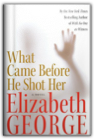
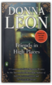

The Lost Explorer : Finding Mallory On Mount Everest
Conrad Anker, David Roberts
0684871513
This is the adventure story of the year — how Conrad Anker found the body of George Mallory on Mount Everest, casting an entirely new light on the mystery of the explorer who may have conquered Everest seventy-five years ago.On June 8, 1924, George Leigh Mallory and Andrew "Sandy" Irvine were last seen climbing toward the summit of Mount Everest. Clouds soon closed around them, and they vanished into history. Ever since, mountaineers have wondered whether they reached the summit twenty-nine years before Edmund Hillary and Tenzing Norgay.
On May 1, 1999, Conrad Anker, one of the world's strongest mountaineers, discovered Mallory's body lying facedown, frozen into the scree and naturally mummified at 27,000 feet on Everest's north face. The condition of the body, as well as the artifacts found with Mallory, including goggles, an altimeter, and a carefully wrapped bundle of personal letters, are important clues in determining his fate. Seventeen days later, Anker free-climbed the Second Step, a 90-foot sheer cliff that is the single hardest obstacle on the north ridge. The first expedition known to have conquered the Second Step, a Chinese team in 1975, had tied a ladder to the cliff, leaving unanswered the question of whether Mallory could have climbed it in 1924. Anker's climb was the first test since Mallory's of the cliff's true difficulty. In treacherous conditions, Anker led teammate Dave Hahn from the Second Step to the summit.
Reflecting on the climb, Anker explains why he thinks Mallory and Irvine failed to make the summit, but at the same time, he expresses his awe at Mallory's achievement with the primitive equipment of the time. Stunningly handsome andcharismatic, Mallory charmed everyone who met him during his lifetime and continues to fascinate mountaineers today. He was an able writer, a favorite of the Bloomsbury circle, and a climber of legendary gracefulness. "The Lost Explorer" is the remarkable story of this extraordinarily talented man and of the equally talented modern climber who spearheaded a discovery that may ultimately help solve the mystery of Mallory's disappearance.

Track of the Cat
Nevada Barr
0380721643
A stunning mystery set against the high-country trails of the Guadalupe Mountains of West Texas, where the age-old battle of man against nature is fought with a frightening twist. Anna Pigeon has fled New York and her memories to find work as a ranger in the country's national parks. In the remote backcountry of West Texas, however, she discovers murder and violence. Fellow park ranger Sheila Drury is mysteriously killed, presumably by a mountain lion. But the deep claw marks Anna finds across Drury's throat and the paw prints surrounding the body are too perfect to be real. Suspicious from the start and eager to prevent the needless slaughter of her beloved cougars, Anna can't let the matter rest. The disappearance of another ranger and the frightening reality of a hiking "accident" of her own convince Anna that something is very wrong. Following a trail with few leads, Anna must confront the dark side of the desert. As she comes closer to the truth, she realizes that whatever is stalking the land she loves is now stalking her as well. Atmospheric, evocative, and rich in the mysterious secrets of the Southwestern wilderness, Track of the Cat marks the mystery debut of a superior writer.

More Everyday Wisdom: Trail-Tested Advice from the Experts
Karen Berger
0898868998
Want to know why a forest smells different before it starts to rain? Or how long a pair of hiking boots should actually last? Find these answers and more in this pack-perfect book.More Everyday Wisdom provides brilliant improvisations for worst-case scenarios and advice to avoid the most common (and obscure) problems. These backcountry basics will help you plan your trips, become a better problem-solver, and learn to how to stay comfortable.

The Valedictorians
Mitch Cote-Crosskill
1936107368
The torch bearers of tomorrow are stumbling through the darkness. "The Valedictorians" is an unflinching look at a jaded generation desperately seeking direction. It tells the tale of Sam and Pete, two recently graduated best friends who exit college to enter the "real world" of 21st century America. A harsh adjustment ensues and, as they struggle to cope with crippling doubt and alienation, much about themselves and modern living is illuminated. The survival of each will hinge on how they adapt to the new challenges they face.

Conspiracy of Fools: A True Story
Kurt Eichenwald
0767911792
From an award-winning New York Times reporter comes the full, mind-boggling story of the lies, crimes, and ineptitude behind the spectacular scandal that imperiled a presidency, destroyed a marketplace, and changed Washington and Wall Street forever . . .
The Complete Walker IV
Colin Fletcher, Chip Rawlins
0375703233
For the first time since 1984, we have a new edition of the classic book that Field & Stream called “the Hiker’s Bible.” For this version, the celebrated writer and hiker Colin Fletcher has taken on a coauthor, Chip Rawlins, himself an avid outdoorsman and a poet from Wyoming. Together, they have made this fourth edition of The Complete Walker the most informative, entertaining, and thorough version yet.The eighteen years since the publication of The Complete Walker III have seen revolutionary changes in hiking and camping equipment: developments in waterproofing technology, smaller and more durable stoves, lighter boots, more manageable tents, and a wider array of food options. The equipment recommendations are therefore not merely revised and tweaked, but completely revamped. During these two decades we have also seen a deepening of environmental consciousness. Not only has backpacking become more popular, but a whole ethic of responsible outdoorsmanship has emerged. In this book the authors confidently lead us through these technological, ethical, and spiritual changes.
Fletcher and Rawlins’s thorough appraisal and recommendation of equipment begins with a “Ground Plan,” a discussion of general hiking preparedness. How much to bring? What are the ideal clothes, food, boots, and tents for your trip? They evaluate each of these variables in detail—including open, honest critiques and endorsements of brand-name equipment. Their equipment searches are exhaustive; they talk in detail about everything from socks to freeze-dried trail curries.
They end as they began, with a philosophical and literary disquisition on the reasons to walk, capped off with a delightful collection of quotes about walking and the outdoor life. After a thoughtful and painstaking analysis of hiking gear from hats to boots, from longjohns to tent flaps, they remind us that ultimately hiking is about the experience of being outdoors and seeing the green world anew.
Like its predecessors, The Complete Walker IV is an essential purchase for anyone captivated by the outdoor life.
From the Hardcover edition.

What Came Before He Shot Her Book
Elizabeth George
0060545623
A kind and well-loved woman was brutally and inexplicably murdered the pregnant wife of a respected police inspector and her death has left Scotland Yard shocked and searching for answers. Perhaps most horrifying of all, the trigger of the weapon that killed her was apparently pulled by a stranger . . . a twelve-year-old boy.The anatomy of a murder, the story of a family in crisis, What Came Before He Shot Her is a powerful, emotional novel full of deep psychological insights, a novel that only the incomparable Elizabeth George could write.

Annapurna
Maurice Herzog
0712673938

Walking the Big Wild: From Yellowstone to the Yukon on the Grizzle Bears' Trail
Karsten Heuer
0898869838
A wildlife biologist and park warden describes his eventful eighteen-month journey with a remarkable border collie named Webster from Yellowstone National Park in Wyoming to the Canadian Yukon by hiking, skiing, and paddling across mountains, forests, and rivers. Original.

The Sinister Pig
Tony Hillerman
006019443X
The victim, well dressed but stripped of identification, is found at the edge of the vast Jicarilla Apache natural gas field just inside the jurisdiction of the Navajo Tribal Police, facing Sergeant Jim Chee with a complex puzzle.Why did the Washington office of the FBI snatch custody of this case from its local agents, cover it with secrecy, and call it a hunting accident? What was the victim seeking among the maze of pipelines and pumping stations in America's largest gas field? Was he investigating the embezzlement of billions of dollars from the Indian Tribal royalty trust in the Department of the Interior?
On a level nearer to Chee's heart, did the photographs Bernie Manuelito took on an exotic game ranch near the Mexican border reveal something connected with this crime? Did Bernie, once a member of Chee's squad but now a rookie Border Patrol Officer, put herself in terrible danger?
Tony Hillerman leads his readers through another of his intricate plots to the solution of this crime, with a cast of vivid characters: a Washington political mogul and his more-or-less renegade pilot; a customs official who bends the rules; a Mexican smuggler with a conscience; and, finally, "Legendary Lieutenant" Joe Leaphorn, now retired, who connects the lines on a dusty old map to find the answers — and the Sinister Pig — among the great scimitar-horned oryx grazing on the historic Tuttle Ranch.

The Quiet Girl: A Novel
Peter Hoeg
0374263698
Set in Denmark in the here and now, The Quiet Girl centers around Kaspar Krone, a world-renowned circus clown with a deep love for the music of Johan Sebastian Bach, and an even deeper gambling debt. Wanted for tax evasion and on the verge of extradition, Krone is drafted into the service of a mysterious order of nuns who promise him reprieve from the international authorities in return for his help safeguarding a group of children with mystical abilities—abilities that Krone also shares. When one of the children goes missing, Krone sets off to find the young girl and bring her back, making a shocking series of discoveries along the way about her identity and the true intentions of his young wards. The result is a fast-paced, philosophical thriller blending social realism with the literary fantastic and pitting art and spirituality against corporate interests and nothing less than the will to war by the industrialized world. The Quiet Girl is a masterful, inventive novel that marks the triumphal return of one of the great writers of the international literary world.

Philosophy Of Mind
Jaegwon Kim
0813307767
The philosophy of mind has always been a staple of the philosophy curriculum. But it has never held a more important place than it does today, with both traditional problems and new topics often sparked by the implications of modern psychology, cognitive science, and computer science.In this concise but comprehensive survey, Jaegwon Kim explores, maps, and interprets this difficult terrain. Designed as a textbook for upper-level undergraduates and graduate students, Philosophy of Mind succeeds brilliantly on these terms. But it also manages to offer riches to experienced philosophers while remaining accessible to readers new to philosophy.Focusing on the traditional mind/body problem, Kim canvasses the traditional attempts to explain the mind as soul, as certain forms of behavior, as brain, or as a type of computer as well as more recent complex attempts to meet objections raised by these accounts. The author also includes extensive coverage of the issues surrounding content and consciousness.Throughout, Kim allows readers to come to their own terms with these views. At the same time, the author’s own emerging views are on display and serve to advance the discussion. Readers of Kim’s previous work will especially welcome this aspect of the text.Comprehensive, clear, and fair, Philosophy of Mind is a model of philosophical exposition. It is a major contribution to the study and teaching of the philosophy of mind.
A Noble Radiance
Donna Leon
0142003190
Donna Leon has topped European bestseller lists for more than a decade with a series of mysteries featuring clever Commissario Guido Brunetti. Always ready to bend the rules to uncover the threads of a crime, Brunetti manages to maintain his integrity while maneuvering through a city rife with politics, corruption, and intrigue.In A Noble Radiance a new landowner is summoned urgently to his house not far from Venice when workmen accidentally unearth a macabre grave. The human corpse is badly decomposed, but a ring found nearby proves to be a first clue that reopens an infamous case of kidnapping involving one of Venice's most aristocratic families. Only Commissario Brunetti can unravel the clues and find his way into both the heart of patrician Venice and that of a family grieving for their abducted son.

Dressed for Death
Donna Leon
0143035843
Donna Leon’s Commissario Guido Brunetti series grows more popular in America with the publication of every new novel. In this installment, Brunetti’s hopes of a refreshing family holiday in the mountains are once again dashed when a gruesome discovery is made in Marghera—a body so badly beaten the face is completely unrecognizable. Brunetti searches Venice for someone who can identify the corpse, but he is met with a wall of silence. Then he receives a telephone call from a contact who promises some tantalizing information. And before the night is out, Brunetti is confronting yet another appalling, and apparently senseless, death.

Blood from a Stone
Donna Leon
014303698X
Guido Brunetti, the hero of Donna Leon’s internationally bestselling crime series, is back, in a novel that combines an ingenious plot with an alluring portrait of contemporary Venice. On a cold December night, a Senegalese man who sells counterfeit fashion accessories is killed on the Campo Santo Stefano. What first appears to be a straightforward clash between rival dealers soon raises questions: What was a penniless foreigner doing with a fortune in diamonds? And why does Brunetti’s boss want him off the case? Fans of Donna Leon will be thrilled with Blood from a Stone, as Brunetti delves into the secrets of Venice’s immigrant community and continues to uncover corruption in the upper echelons of the government.

Suffer the Little Children
Donna Leon
0143113615
A riveting new mystery from international bestseller Donna LeonDonna Leon?s Commissario Brunetti series has made Venice?a city that?s beautiful and sophisticated, but also secretive and corrupt?one of mystery fans? most beloved locales. In this brilliant new book, Brunetti is summoned to the hospital bed of a respected pediatrician, where he is confronted with more questions than answers. Three men had burst into the doctor?s apartment, attacked him, and kidnapped his eighteen-month-old son. What could have motivated an assault so violent that it has left the doctor mute? And could this crime be related to the moneymaking scam run by pharmacists that Brunetti?s colleague has recently uncovered? As Brunetti delves deeper into the case, a story of infertility, desperation, and illegal dealings begins to unfold.

Friends in High Places
Donna Leon
014311414X
The winner of the Crime Writers Association Macallan Silver Dagger?available for the first time in the United StatesDonna Leon?s sophisticated Commissario Brunetti series has won her legions of fans over the years. In Friends in High Places, Brunetti is visited by a young bureaucrat investigating the lack of official approval for the building of Brunetti?s apartment years before. What began as a red tape headache ends in murder when the bureaucrat is found dead after a mysterious fall from a scaffold. Brunetti starts an investigation that will take him into unfamiliar and dangerous areas of Venetian life, and will reveal, once again, what a difference it makes to have friends in high places.

About Face
Donna Leon
0802118968
Donna Leon’s eighteen novels have won her countless fans, heaps of critical acclaim, and a place among the top ranks of international crime writers. Through the warm-hearted, perceptive, and principled Commissario Guido Brunetti, Leon’s best-selling books have explored Venice in all its aspects: history, tourism, high culture, food, family, but also violent crime and political corruption.In About Face, Leon returns to one of her signature subjects: the environment, which has reached a crisis in Italy. Incinerators across the south of Italy are at full capacity, burning who-knows-what and releasing unacceptable levels of dangerous air pollutants, while in Naples, enormous garbage piles grow in the streets. In Venice, with the polluted waters of the canals and a major chemical complex across the lagoon, the issue is never far from the fore.
Environmental concerns become significant in Brunetti’s work when an investigator from the Carabiniere, looking into the illegal hauling of garbage, asks for a favor. But the investigator is not the only one with a special request. His father-in-law needs help and a mysterious woman comes into the picture. Brunetti soon finds himself in the middle of an investigation into murder and corruption more dangerous than anything he’s seen before.

The Return of the Dancing Master
Henning Mankell
1565848608
The new thriller from the internationally bestselling author of the Kurt Wallander mystery series.It would be nearly two hours before he died. As if in a borderland of horror between the nagging pain and the hopeless will to live, he was taken back in time, to the occasion when he engaged the fate that had now caught up with him.—from The Return of the Dancing Master
December 12, 1945. Nazi Germany lies in ruins as a British warplane lands in Buckeburg. A man carrying a small black bag quickly disembarks and travels to Hameln, where he disappears behind the prison gates. Early the next day, nine male and three female war criminals are hanged.
Fifty-four years later, retired policeman Herbert Molin is found brutally slaughtered on his remote farm in Härjedalen, Sweden. At the murder scene, the police discover strange tracks in the blood on the floor...as if someone had been practicing the tango.
Stefan Lindman, a young police officer on extended sick leave, hears about the murder of his former colleague and decides to investigate it himself. Lindman's inquiry becomes increasingly complex and dangerous as he uncovers the links between Herbert Molin's death and a global web of neo-Nazi activity.

Death In A White Tie
Ngaio Marsh
051508591X
The season has begun. Debutantes and chaperones are planning their luncheons, teas, dinners, and balls, and the blackmailer is planning his strategies and stalking his next victim. Chief Detective Inspector Roderick Alleyn senses that something was up. He plants his friend Lord Robert Gospell at the scene, but when he arrives it becomes clear that someone else got their first.

Hiking Glacier and Waterton Lakes National Parks
Erik Molvar
1560447184
This comprehensive guide covers more than 850 miles of trails.

Witness to History: The Photographs of Yevgeny Khaldei
Alexander Nakhimovsky, Alice Nakhimovsky
0893817384
Photographs by Yevgeny KhaldeiBiographical essay by Alexander and Alice Nakhimovsky
One of the greatest Soviet treasures to come to light after the end of the cold war is the work of the photographer Yevgeny Khaldei. A staff photographer for the Soviet news agency TASS during World War II, Khaldei produced a tremendous and valuable archive of images. He covered every day of the conflict from the German invasion of the USSR in 1941 to the fall of Berlin in 1945, where he raced to the roof of the burning Reichstag to take his famous photograph of a soldier hoisting the Soviet flag. His unflinching approach, and the moving images that resulted, have led to comparisons with the work of Robert Capa.
Khaldei's life was shaped by the triumphs and disasters of the Soviet twentieth century. Yevgeny Khaldei was born in 1917, just months before the Bolshevik Revolution. A year later, as pogroms ravaged the Jewish towns of the Ukraine, his mother was shot and the bullet that killed her lodged in his chest. At the age of eleven he made a crude camera from a cardboard box and his grandmother's spectacles. Before long his images of the heroes of Soviet construction, triumphant steelworkers and stoic farmers, were appearing in the newspaper Pravda. By the end of the war Khaldei was acknowledged as Russia's greatest combat photographer. Born as the Soviet Union was coming into existence, Yevgeny Khaldei has lived through its struggles, triumphs, and eventually its downfall. Eighty years old, Yevgeny Khaldei still resides in Moscow.

Escape Routes: Further Adventure Writings of David Roberts
David Roberts
0898865093
In these twenty essays - some published here for the first time - Roberts ranges the globe, profiles explorers, and pursues his newest passions - backcountry archaeology and anthropology. From caving in the unexplored labyrinths of New Mexico to ascending Iceland's most famous mountain with Jon Krakauer to following the grueling Raid Gauloises race in the Patagonia wilderness to tracking Jeff Lowe on a new route on the Eiger - Roberts doesn't just write about these adventures, he lives them.

Deborah and Mountain of My Fear
David Roberts
1885283253

Escape from Lucania : An Epic Story of Survival
David Roberts
0743224329
In 1937, Mount Lucania was the highest unclimbed peak in North America. Located deep within the Saint Elias mountain range, which straddles the border of Alaska and the Yukon, and surrounded by glacial peaks, Lucania was all but inaccessible. The leader of one failed expedition deemed it "impregnable." But in that year, a pair of daring young climbers would attempt a first ascent, not knowing that their quest would turn into a perilous struggle for survival. "Escape from Lucania" is their remarkable story.Classmates and fellow members of the Harvard Mountaineering Club, Brad Washburn and Bob Bates were two talented young men — handsome, intelligent, and filled with a zest for exploring. Both were ambitious climbers, part of a small group whose first ascents in the great mountain ranges during the 1930s and 1940s changed the face of American mountaineering. Setting their sights on summitting Lucania in the summer of 1937, Washburn and Bates put together a team of four climbers for the expedition. But when Bates and Washburn flew to the Walsh Glacier at the foot of Lucania, they discovered that freakish weather conditions had turned the ice to slush. Their pilot was barely able to take off again alone, and there was no question of returning with the other two climbers or more supplies. Washburn and Bates found themselves marooned on the glacier, more than a hundred miles from help, in forbidding and desolate territory. Eschewing a trek out to the nearest mining town — eighty miles away by air — they decided to press ahead with their expedition.
"Escape from Lucania" recounts Washburn and Bates's determined drive toward Lucania's 17,150-foot summit under constant threat ofavalanches, blinding snowstorms, and hidden crevasses. Against awesome odds they became the first to set foot on Lucania's peak, not realizing that their greatest challenge still lay beyond. Nearly a month after being stranded on the glacier and with their supplies running dangerously low, they would have to navigate their way out through uncharted Yukon territory, racing against time as the summer warmth caused rivers to swell and flood to unfordable depths. But even as their situation grew more and more desperate, they refused to give up.
"Escape from Lucania" tells this amazing story in thrilling and vivid detail, from the climbers' exultation at reaching the summit to their darkest moments confronting seemingly insurmountable obstacles. It is a tale of awesome adventure and harrowing danger. But above all it is the story of two men of extraordinary spirit, inspiring comradeship, and great courage.
Today Washburn and Bates, now in their nineties, are legends in climbing circles. Bates co-led 1938 and 1953 expeditions to K2, the world's second-highest mountain. Washburn, whose record of Alaskan first ascents is unmatched, became founding director of Boston's Museum of Science and is one of the premier mountain photographers in the world. Some of his remarkable images from the 1937 Lucania expedition are included in this book.

On the Ridge Between Life and Death: A Climbing Life Reexamined
David Roberts
0743255186
By the time David Roberts turned twenty-two, he had been involved in three fatal mountain climbing accidents and had himself escaped death by the sheerest of luck.At age eighteen, Roberts witnessed the death of his first climbing partner in Boulder, Colorado. A few years later, he was the first on the scene of a fatal accident on Mount Washington, New Hampshire. Months afterward, while pioneering a new route in Alaska with the Harvard Mountaineering Club, Roberts watched as his climbing partner and friend fell wordlessly 4,000 feet to a glacier below.
Despite these tragedies, Roberts insists that the greatest pleasures in his life have come in the mountains. Several of his challenging routes in Alaska have never been climbed again in the nearly forty years since those first ascents. Roberts continues to climb today, and like all climbers, he still grapples with the cost-benefit calculus of his sport. In a well-known essay that he wrote twenty-five years ago, "Moments of Doubt," Roberts insisted that the benefits of climbing were "worth it." More recently, however, he has gone back to interview relatives and friends of some of his deceased climbing partners. He discovered that even decades later, the wounds had failed to heal, the terrible losses were still acutely felt. And so in this book he comes to a different conclusion about climbing, one that is sure to stir controversy in mountaineering circles and among adventurers generally.
Anyone who has ever wondered why mountaineers take the risks that they do will be moved and enlightened by On the Ridge Between Life and Death, as will anyone who appreciates vivid, dramatic storytelling and an unflinchingly honest self-examination of a lifetime spent pursuing a dangerous pastime.
No Shortcuts to the Top: Climbing the World's 14 Highest Peaks
Ed Viesturs, David Roberts
0767924703
This gripping and triumphant memoir follows a living legend of extreme mountaineering as he makes his assault on history, one 8,000-meter summit at a time.For eighteen years Ed Viesturs pursued climbing’s holy grail: to stand atop the world’s fourteen 8,000-meter peaks, without the aid of bottled oxygen. But No Shortcuts to the Top is as much about the man who would become the first American to achieve that goal as it is about his stunning quest. As Viesturs recounts the stories of his most harrowing climbs, he reveals a man torn between the flat, safe world he and his loved ones share and the majestic and deadly places where only he can go.
A preternaturally cautious climber who once turned back 300 feet from the top of Everest but who would not shrink from a peak (Annapurna) known to claim the life of one climber for every two who reached its summit, Viesturs lives by an unyielding motto, “Reaching the summit is optional. Getting down is mandatory.” It is with this philosophy that he vividly describes fatal errors in judgment made by his fellow climbers as well as a few of his own close calls and gallant rescues. And, for the first time, he details his own pivotal and heroic role in the 1996 Everest disaster made famous in Jon Krakauer's Into Thin Air.
In addition to the raw excitement of Viesturs’s odyssey, No Shortcuts to the Top is leavened with many funny moments revealing the camaraderie between climbers. It is more than the first full account of one of the staggering accomplishments of our time; it is a portrait of a brave and devoted family man and his beliefs that shaped this most perilous and magnificent pursuit.

The Professor and the Madman: A Tale of Murder, Insanity, and the Making of The Oxford English Dictionary
Simon Winchester
006099486X
"The Professor and the Madman," masterfully researched and eloquently written, is an extraordinary tale of madness, genius, and the incredible obsessions of two remarkable men that led to the making of the "Oxford English Dictionary"—and literary history. The compilation of the "OED," begun in 1857, was one of the most ambitious projects ever undertaken. As definitions were collected, the overseeing committee, led by Professor James Murray, discovered that one man, Dr. W C. Minor, had submitted more than ten thousand. When the committee insisted on honoring him, a shocking truth came to light: Dr. Minor, an American Civil War veteran, was also an inmate at an asylum for the criminally insane.